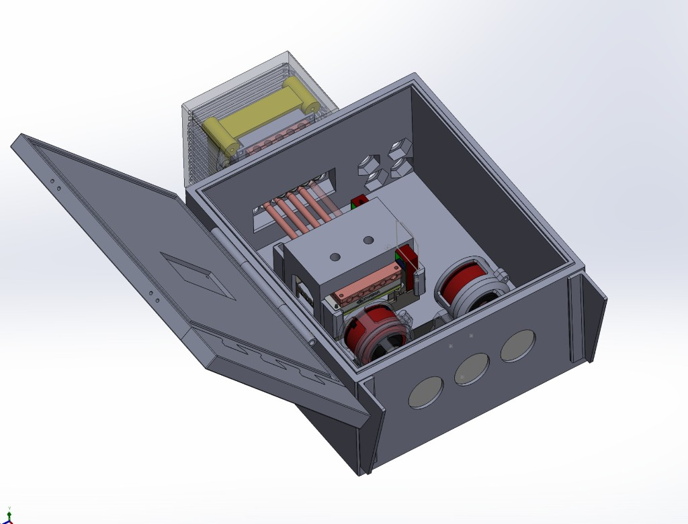

Object models
Detection models developed and evaluated on imagery relevant to the task.
Products / hardware, AI & software
Every tier includes Jetson processing. Higher tiers add cameras and sensing inputs, from a boxed optical unit through multi-sensor site monitoring to the radar-equipped three-device suite.

TIER 0 / BOXED OPTICAL UNIT
A boxed camera-based observation unit with onboard Jetson processing for scene recording and perception work. A focused configuration for maritime observation, scientific recording, and object-model evaluation.
TIER 1 / MULTI-SENSOR SYSTEM
A multi-camera pod paired with a mast-mounted sensing array, combining optical observation with acoustic inputs. Onboard Jetson processing supports the perception workflow; the camera and sensor selection is defined for the task.

TIER 2 / EXPANDED SITE SYSTEM
A larger camera pod and mast-mounted acoustic assembly for persistent site observation. Jetson processing runs onboard, while additional cameras and sensing inputs provide more observations to compare. Tier 2 does not include radar.

Tier 3 / radar-equipped suite
Tier 3 combines Jetson-powered visual–acoustic sensing with a partner-supported radar unit. The three-device suite brings optical observation, acoustic sensing, and radar into a site-specific integration project.
A partner-supported pilot configuration. Radar supply, data interfaces, and integrated performance are confirmed for each project.
Discuss Tier 3AI & software
Hardware is one part of the system. Our software and perception work brings detection, tracking, and evidence review into the same development workflow.
Detection models developed and evaluated on imagery relevant to the task.
Small-point tracking research and recorded output comparisons across image sequences.
Collection, processing, review, and partner interfaces scoped around the configuration.
Hardware, software & services
Your proposal separates the hardware configuration, software license, and deployment services. Compare the system scope around the observation task and integration requirements.
Jetson-powered hardware, with camera and sensor configuration matched to the observation task.
Annual per-unit licensing for agreed perception and review workflows, scoped alongside the hardware.
Project-specific integration, pilot evaluation, and support arrangements for defense, infrastructure, and research programs.
Your proposal specifies the cameras, sensors, software licenses, services, and evaluation scope for the project.
Systems & pilot projects
Discuss the environment, target objects, and information your team needs. Configuration and pricing are confirmed together.